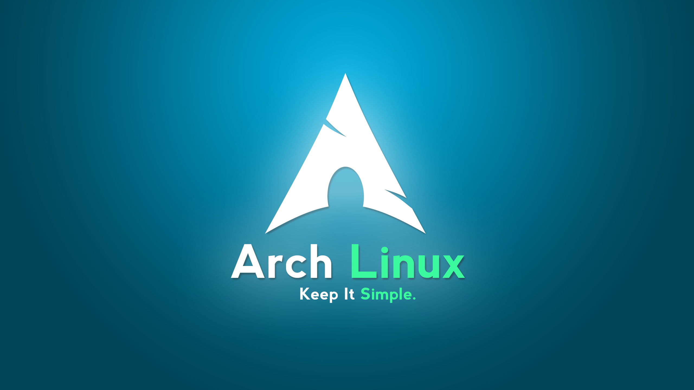

Arch Linux Vs Pop!_OS: The Ultimate Guide for Developers and Security Experts

Table of Contents
Introduction
As a Junior security researcher and system administrator, I’ve had the opportunity to use multiple Linux distributions including Kali Linux, Parrot OS, Ubuntu, Pop!_OS, etc… and my favorite Arch Linux. Note that each distro has its strengths and weaknesses catering to different user needs.
This might seem surprising for some people but I don’t use Kali Linux much despite its “ready to use philosophy” and if you keep reading this you might understand why. Despite the versatility, in this blog, I will break down my experience with Pop!_OS and Arch Linux, the pros, cons and use cases.
By the end of this blog, you should be able to identify the best fit for your workflows. Let’s do this!!
Overview of Pop!_OS and Arch Linux
- Pop!_OS: Developed by System76, Pop!_OS is based on Ubuntu. It’s tailored for developers, creators, and professionals, offering simplicity, excellent hardware compatibility, and out-of-the-box features. More details
- Arch Linux: Known for its "DIY or do-it-yourself" philosophy, Arch Linux is a minimalist rolling-release distro that lets users configure every aspect of the system to their liking. More details
My Experience with Arch Linux

- Pros of Arch Linux
- Ultimate customization: Arch allows you to tailor your system exactly as needed. From the kernel to the window manager, every choice is yours. Keep in mind that there are some desktop environments (such as GNOME or KDE) faster to setup if time is a constraint. However, the limitations in terms of customization remain slightly similar to Pop!_OS.
- Rolling release: Access to the latest packages and updates means cutting-edge software for developers and security professionals. I would say, this is more of a double-edged sword and people have different feelings about this.
- AUR (Arch User Repository): The AUR provides access to thousands of community-contributed packages, including niche tools like PenTesting utilities or custom scripts.
- Performance: A lean base installation ensures no unnecessary bloat, making Arch fast and efficient.
- Comprehensive documentation: The Arch Wiki is an unparalleled resource for troubleshooting and learning.
- Cons of Arch Linux
- Steep learning curve: Installing and maintaining Arch can be challenging for beginners or those seeking a quick setup. (e.g., simple installation and setup can take up to 2–4 weeks or more to have a fully functional machine).
- Stability concerns: Being on the bleeding edge means updates can occasionally break the system.
- Time-Intensive setup: Configuring Arch for specific workflows (e.g., security tools or development environments) can be time-consuming. This might also bring issues such as software, drivers and dependencies compatibility.
- Use Cases
- Developers: Perfect for those who need the latest programming tools and libraries.
- Pentesters: Offers full control over the system, allowing for custom tool installations and configurations.
- Advanced users: Arch is best suited for those who enjoy tinkering and have a solid understanding of Linux internals.
My Experience with Pop!_OS
- Pros of Pop!_OS
- Ease of use: Pop!_OS offers a polished experience out of the box. The installation is straightforward, and tools like the Pop!_Shop simplify software management.
- Focus on productivity: With features like auto-tiling windows and intuitive shortcuts, it helps streamline multitasking, especially for programming and security analysis.
- Great hardware support: System76’s emphasis on hardware optimization, especially for laptops, ensures seamless driver support (e.g., Nvidia).
- Pre-installed software: Comes with necessary tools like Python, Git, and a GNOME desktop environment, saving setup time for development tasks.
- Frequent updates without breaking: Pop!_OS strikes a balance between stability and new features by offering well-tested updates. This is one of the major difference between Pop!_OS and Arch Linux.
- Cons of Pop!_OS
- Limited customization: While GNOME offers a user-friendly experience, its limited flexibility may feel restrictive, especially for experienced Arch users or developers familiar to more customizable desktop environments.
- Resource usage: Pop!_OS requires more system resources than lightweight distributions, which can be a drawback for older machines.
- Not rolling-release: Despite frequent updates, being Ubuntu-based means it lacks the latest packages compared to rolling-release distros like Arch. Some software also requires Snapd, as it’s unavailable in APT or Pop!_Shop.
- Use Cases
- Developers: Ideal for those who need a hassle-free environment to start coding immediately.
- Security Analysts: Great for running tools like Wireshark, Burp Suite, or VMs without extensive setup.
- Beginners: Pop!_OS offers an accessible entry point to Linux without overwhelming users. For short, it’s very beginner friendly.
Head-to-Head Comparison
For your convenience, here’s a quick reference table for easy access, should you revisit this post and want to jump straight into the comparison.
| Features | Pop!_OS | Arch Linux |
|---|---|---|
| Ease of installation | Simple GUI installer | Manual, CLI based |
| Customizability | Limited (GNOME-based) | Highly customizable |
| Software Management | Pop!_OS + APT | Pacman + AUR |
| Hardware Compatibility | Excellent, esp. Nvidia GPU's | Depends on user configuration |
| Learning Curve | Low | High |
| Performance | Slightly resource-heavy | Lightweight |
| Community Support | Good | Excellent (Arch Wiki, Forums) |
| Ideal User | Beginners, productivity-focused | Advanced users, tinkerers |
My Personal Takeaways

- For Quick and Hassle-Free Workflows: Pop!_OS is unbeatable for professionals who want to start working immediately without worrying about system setup or maintenance.
- For Full Control and Cutting-Edge Software: Arch Linux is perfect for those willing to invest time to build a highly customized and efficient system.
- For Security Professionals: Arch provides greater flexibility, especially when setting up tools for penetration testing, while Pop!_OS shines in running stable environments for analysis and reporting.
- For Multi-Cloud and Red Teaming Workflows: Pop!_OS offers a more stable base for hybrid workloads, while Arch can be tailored for advanced cloud security tasks.
- Hardware specs matters: Allow me to repeat that, hardware specs matter a lot more than you think. In fact, this factor plays a significant role in keeping your environment stable and save yourself hours or why not days of troubleshooting. The worst combination you can ever have is Nvidia Drivers + Intel CPU (anything Nvidia based for that matter). I personally have that combination and it’s a nightmare (eg. A simple troubleshooting can be super time consuming taking up to a week if not more). Hence, take note that it’s best to opt for AMD based GPU.
With this comparison, you should have the necessary knowledge to determine which distro aligns best with your workflow and professional needs. With that being said, there are still wonderful distros out there worth downloading and configuring.
My advice: Download, configure, play around and choose what’s best for your needs as we all have our preferences.
Lastly, the beauty of Linux lies in its freedom of choice, whether you prioritize control or convenience, the best distro is the one that empowers you to achieve your goals.